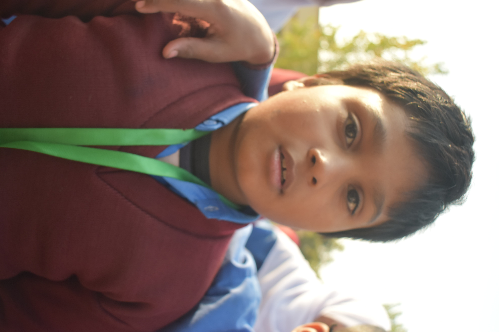

Ahmed

Meet Ahmed: A Hopeful 10-Year-Old from Gujranwala Ahmed is a 10-year-old boy from Gujranwala, Pakistan, who has faced more than his fair share of struggles in life. Unlike many children, Ahmed’s father is alive, but his life is far from easy. His father, once a skilled carpenter, now suffers from a debilitating illness that has left him unable to work. His mother, a caring but overwhelmed woman, works as a domestic helper, earning just enough to cover the basics for the family. Despite their best efforts, Ahmed’s family struggles to make ends meet. Growing up, Ahmed was always a curious and eager learner. He loved going to school and spending time with his friends, but that dream has slowly faded as his family’s financial situation worsened. With his father unable to provide for the family and his mother working long hours for very little pay, Ahmed's education became an afterthought. School fees were too high, and buying books and uniforms was a luxury they simply could not afford. As a result, Ahmed had to drop out of school at the age of 8. Since then, he spends his days at home, helping his mother with household chores and taking care of his younger siblings. Although he dreams of returning to school, the reality of his situation has left him feeling hopeless. The small house where they live is overcrowded and often lacks basic necessities. There are days when they struggle to even have enough food to eat. Despite the hardships, Ahmed is a kind and resilient child. He often dreams of becoming an engineer, believing that education is the only way out of poverty. He dreams of helping his family live a better life and giving back to his community by using the skills he would learn in school. However, with no financial support and no way to pay for school, Ahmed’s dreams seem like an impossible fantasy. What hurts Ahmed the most is the constant pressure he feels. He sees his father, once a proud and hardworking man, now weakened by illness and unable to help the family. He knows that his mother works tirelessly, but the financial burden is too much for her alone. The weight of these realities often makes Ahmed feel like his dreams are slipping away. But deep down, he still holds on to the hope that one day, things will get better. How You Can Help Ahmed Ahmed’s story is one of hardship, but also one of hope. Despite the overwhelming challenges, he remains determined to change his life. However, he cannot do it alone. With your support, Ahmed can return to school and continue his education. Your donation will cover his school fees, books, uniforms, and other necessary supplies, giving him the chance to follow his dreams of becoming an engineer. For just a small contribution, you can make a life-changing difference for Ahmed. Your support will not only provide him with an education but also empower him to help his family and break the cycle of poverty. Ahmed’s story is a reminder that even in the face of adversity, the hope of a brighter future is possible through education. Together, we can help Ahmed turn his dreams into reality. With your help, he can overcome the challenges of his past and build a future filled with opportunity and success.